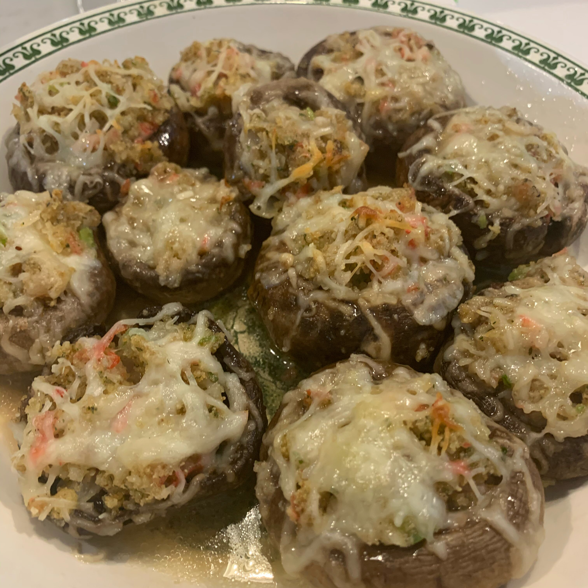

Crab-stuffed Mushrooms

Description
These little goodies are the perfect addition to your next holiday gathering or even the perfect appetizer to serve before a cozy dinner at home.
Ingredients
- 2 tablespoons butter
- 2 tablespoons minced green onion
- 1 cup cooked crabmeat, finely chopped
- ½ cup dry bread crumbs
- See the rest of the ingredients at recipe.com
Steps
- Preheat oven to 400 degrees F (200 degrees C).
- Melt 2 tablespoons butter in a skillet; cook and stir green onion until softened, about 2 minutes. Transfer green onion to a bowl. Stir in crabmeat, bread crumbs, 1/4 cup Monterey Jack cheese, egg, lemon juice, and dill weed until well mixed.
- Pour 1/2 cup melted butter in a 9x13-inch baking dish; turn mushroom caps in butter to coat. Fill mushroom caps with the crab mixture and sprinkle with remaining 1/2 cup Monterey Jack cheese. Pour white wine into baking dish.
- See the rest of the preparation steps at recipe.com